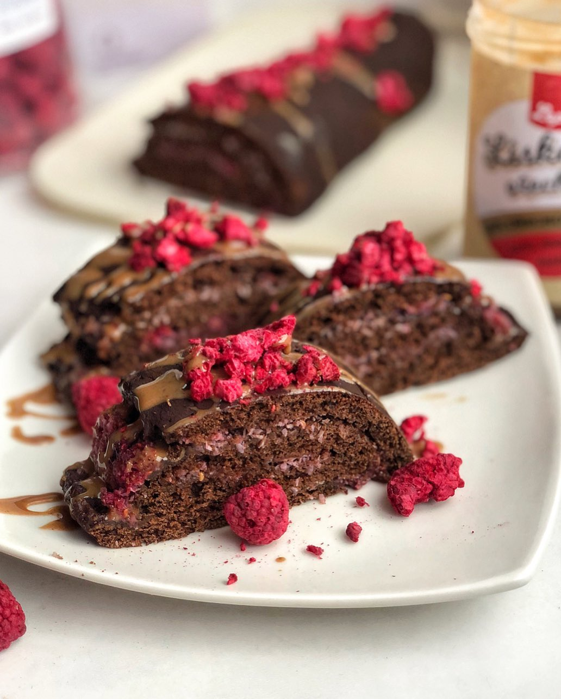

Kakaová roláda podľa @rommiemax — Normy Jedál
•
Na tu veľkú noc jeden kakaový zavin naplnený mrazenými malinami a strúhanym kokosom @svetplodu 😍
Jogurtové cesto je riadne krehké dokonca sa mi trochu viac páči ako z bieleho cesta 😋
Ozdobené lyo malinami @svetplodu a poliate lieskovým mega tekutým maslom
zavin z kakaového cesta s malinami a kokosom
1 vajce
150g biely jogurt
190g špaldova celozrnna múka
40g kakao
30g lieskova/mandľova múka (mleté orechy)
30g lieskove maslo
1/4čl soľ
30g xylitol
Plnka 3-4hrste mrazene maliny 1-2 odmerky struhany kokos alebo odoka xilytol
Zo surovín vypracovať cesto dosku som si posypala kakaom a vyvaľkala. Natrela na to rovnomerne popučené chvíľu rozmrazené maliny posypala kokosom xilytolom zrolovať a piecť na 185*C 20-30min ☺️
#dnesjem #kakaovarolada #foodporn #peciemslaskou #mojerano #mojeranajky #vkuchyni #svetploducz #svetplodu #rommiemaxrecepty